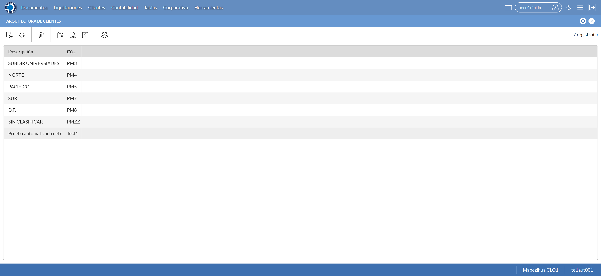
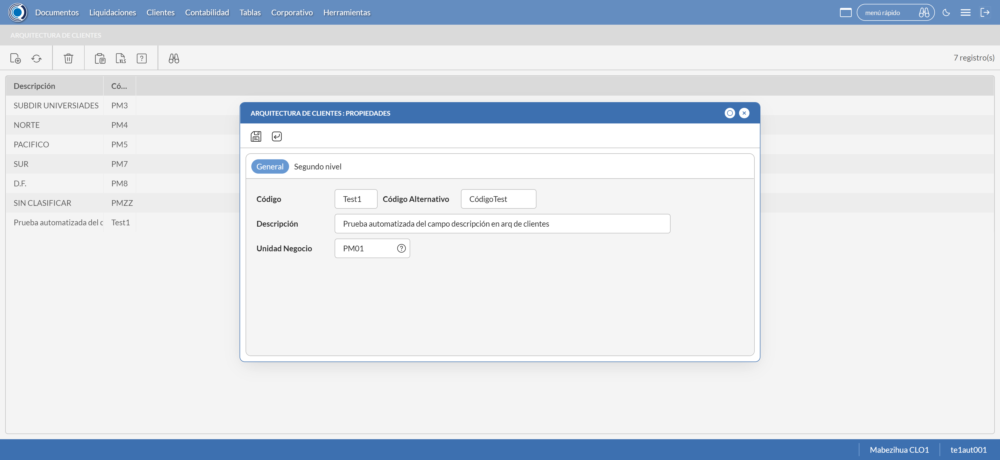
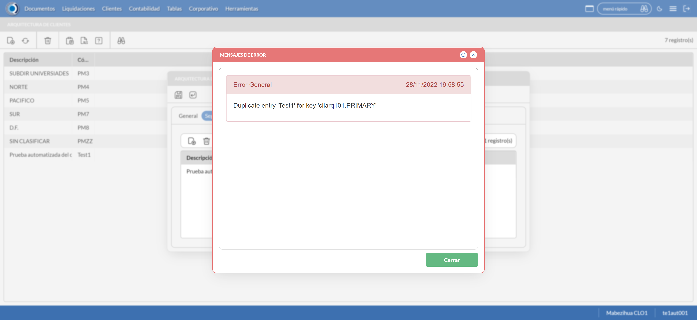

Desarrollado por : Area de Testing PWST
Fecha y hora de inicio : 2022-11-28 13:56:51
Duracion : 0:02:27.955796
Resultado : Total 8，Correctos 5 ，Errores 3 ，Taza de resultado 62.50%
Resumen 62.50% Errores 3 Fallidos 0 Correctos 5 Test realizados 8
| Caso de Prueba | Total | Correctos | Fallido | Error | Detalles | Captura del error |
| ArqCliente.Test: Escenario 1 de Arquitectura Cliente | 8 | 5 | 0 | 3 | Detalles | |
test |
pt1_1: 2022-11-28 13:56:58,096 - root - INFO - Se abre el chrome
2022-11-28 13:56:59,338 - root - INFO - Entra a la URL
2022-11-28 13:56:59,500 - root - INFO - Maximiza la pantalla
2022-11-28 13:57:02,615 - root - INFO - Cambia al frame
|
|
||||
test_000: Ingresa a la base de datos |
pt1_2: 2022-11-28 13:57:05,705 - root - INFO - Escribe el usuario
2022-11-28 13:57:05,817 - root - INFO - Escribe la contraseña
2022-11-28 13:57:05,998 - root - INFO - Se dio clic en el boton ingresar
2022-11-28 13:57:06,778 - root - INFO - Ejecutar Enterprise
2022-11-28 13:57:10,842 - root - INFO - Cambia entre pestañas
|
|
||||
test_001: Abre menu y ejecuta pantalla |
pt1_3: 2022-11-28 13:57:27,900 - root - INFO - Abre la pantalla de Arquitectura de CLiente
2022-11-28 13:57:27,900 - root - INFO - Captura: C:\xampp\htdocs\Versiones\automatizaciones\AutoPWST\01ARC\report\img screen：20221128_13_57_27.png
2022-11-28 13:57:28,982 - root - INFO - La pantalla ejecutada es Tipos de Cliente
2022-11-28 13:57:29,044 - root - INFO - Se presiona el boton 'Nuevo', para crear un nuevo registro.
|
 | ||||
test_002: Abre la ventana de nuevo y crear un registro |
pt1_4: 2022-11-28 13:57:32,123 - root - INFO - Se abrio la pantalla para el ingreso de un registro nuevo.
2022-11-28 13:57:32,163 - root - INFO - El campo 'Codigo' si se encuentra visible.
2022-11-28 13:57:32,203 - root - INFO - El campo 'Codigo Alternativo' si se encuentra visible.
2022-11-28 13:57:32,243 - root - INFO - El campo 'Descrición' si se encuentra visible.
2022-11-28 13:57:32,273 - root - INFO - El campo 'Unidad de Negocio' si se encuentra visible.
2022-11-28 13:57:32,333 - root - INFO - Ingresa el codigo del nuevo registro
2022-11-28 13:57:35,551 - root - INFO - Ingresa el codigo alternativo del nuevo registro
2022-11-28 13:57:38,757 - root - INFO - Ingresa la descripción del nuevo registro
2022-11-28 13:57:48,259 - root - INFO - Captura: C:\xampp\htdocs\Versiones\automatizaciones\AutoPWST\01ARC\report\img screen：20221128_13_57_48.png
2022-11-28 13:57:52,498 - root - INFO - Se hace el cambio de pestaña para continuar con el registro nuevo
2022-11-28 13:57:55,616 - root - INFO - Se presiona el boton de segundo nivel 'Nuevo', para crear un nuevo registro.
2022-11-28 13:57:58,687 - root - INFO - El campo 'Codigo de segundo nivel' si se encuentra visible.
2022-11-28 13:57:58,737 - root - INFO - El campo 'Codigo Alternativo de segundo nivel' si se encuentra visible.
2022-11-28 13:57:58,777 - root - INFO - El campo 'Descrición de segundo nivel' si se encuentra visible.
2022-11-28 13:58:00,893 - root - INFO - Ingresa el codigo del nuevo registro en segundo nivel
2022-11-28 13:58:04,060 - root - INFO - Ingresa el codigo alternativo del nuevo registro en segundo nivel
2022-11-28 13:58:07,245 - root - INFO - Ingresa la descripción del nuevo registro del segundo nivel
2022-11-28 13:58:10,322 - root - INFO - Se hace el cambio de pestaña para continuar con el registro nuevo
2022-11-28 13:58:13,436 - root - INFO - Se presiona el boton 'Nuevo' de tercer nivel, para crear un nuevo registro.
2022-11-28 13:58:16,540 - root - INFO - El campo 'Codigo de tercer nivel' si se encuentra visible.
2022-11-28 13:58:16,600 - root - INFO - El campo 'Codigo Alternativo de tercer nivel' si se encuentra visible.
2022-11-28 13:58:16,630 - root - INFO - El campo 'Descrición de tercer nivel' si se encuentra visible.
2022-11-28 13:58:18,738 - root - INFO - Ingresa el codigo del nuevo registro en tercer nivel
2022-11-28 13:58:21,867 - root - INFO - Ingresa el codigo alternativo del nuevo registro en tercer nivel
2022-11-28 13:58:25,082 - root - INFO - Ingresa la descripción del nuevo registro del tercer nivel
2022-11-28 13:58:28,175 - root - INFO - Se hace el cambio de pestaña para continuar con el registro nuevo
2022-11-28 13:58:31,312 - root - INFO - Se presiona el boton 'Nuevo' de cuarto nivel, para crear un nuevo registro.
2022-11-28 13:58:34,415 - root - INFO - El campo 'Codigo de cuarto nivel' si se encuentra visible.
2022-11-28 13:58:34,455 - root - INFO - El campo 'Codigo Alternativo de cuarto nivel' si se encuentra visible.
2022-11-28 13:58:34,485 - root - INFO - El campo 'Descrición de cuarto nivel' si se encuentra visible.
2022-11-28 13:58:36,625 - root - INFO - Ingresa el codigo del nuevo registro en cuarto nivel
2022-11-28 13:58:39,829 - root - INFO - Ingresa el codigo alternativo del nuevo registro en cuarto nivel
2022-11-28 13:58:43,048 - root - INFO - Ingresa la descripción del nuevo registro del cuarto nivel
2022-11-28 13:58:46,194 - root - INFO - Se da clic en el boton Guardar de cuarto nivel; se debe crear un nuevo registro.
2022-11-28 13:58:49,321 - root - INFO - Se da clic en el boton Guardar de tercer nivel; se debe crear un nuevo registro.
2022-11-28 13:58:52,398 - root - INFO - Se da clic en el boton Guardar de segundo nivel; se debe crear un nuevo registro.
2022-11-28 13:58:55,502 - root - INFO - Se da clic en el boton Guardar; se debe crear un nuevo registro.
|
 | ||||
test_003: Repetir el registro creado anteriormente |
ft1_5: 2022-11-28 13:58:59,669 - root - ERROR - No se encontró el botón Refrescar, revise si el xpath sigue siendo el mismo, para mas detalles del error consulte el reporte
2022-11-28 13:58:59,669 - root - INFO - Captura: C:\xampp\htdocs\Versiones\automatizaciones\AutoPWST\01ARC\report\img screen：20221128_13_58_59.png
Traceback (most recent call last):
File "C:\xampp\htdocs\Versiones\automatizaciones\AutoPWST\01ARC\testCase\ArqCliente.py", line 48, in test_003
return repetirregistro.repetirregistro(self)
^^^^^^^^^^^^^^^^^^^^^^^^^^^^^^^^^^^^^
File "C:\xampp\htdocs\Versiones\automatizaciones\AutoPWST\01ARC\testCase\repetirregistro.py", line 23, in repetirregistro
Refresca.click()
File "C:\Users\PWST\AppData\Local\Programs\Python\Python311\Lib\site-packages\selenium\webdriver\remote\webelement.py", line 88, in click
self._execute(Command.CLICK_ELEMENT)
File "C:\Users\PWST\AppData\Local\Programs\Python\Python311\Lib\site-packages\selenium\webdriver\remote\webelement.py", line 396, in _execute
return self._parent.execute(command, params)
^^^^^^^^^^^^^^^^^^^^^^^^^^^^^^^^^^^^^
File "C:\Users\PWST\AppData\Local\Programs\Python\Python311\Lib\site-packages\selenium\webdriver\remote\webdriver.py", line 429, in execute
self.error_handler.check_response(response)
File "C:\Users\PWST\AppData\Local\Programs\Python\Python311\Lib\site-packages\selenium\webdriver\remote\errorhandler.py", line 243, in check_response
raise exception_class(message, screen, stacktrace)
selenium.common.exceptions.ElementClickInterceptedException: Message: element click intercepted: Element <div tabindex="12" id="_82F2DD48A192457788A9862D56B0DE4B__refresh_element" name="_82F2DD48A192457788A9862D56B0DE4B__refresh_element">...</div> is not clickable at point (56, 88). Other element would receive the click: <div class="ui-modal-container">...</div>
(Session info: chrome=107.0.5304.122)
Stacktrace:
Backtrace:
Ordinal0 [0x00F0ACD3+2075859]
Ordinal0 [0x00E9EE61+1633889]
Ordinal0 [0x00D9B7BD+571325]
Ordinal0 [0x00DD1499+791705]
Ordinal0 [0x00DCF4AC+783532]
Ordinal0 [0x00DCD0AB+774315]
Ordinal0 [0x00DCBD37+769335]
Ordinal0 [0x00DC1C76+728182]
Ordinal0 [0x00DE731C+881436]
Ordinal0 [0x00DC15BF+726463]
Ordinal0 [0x00DE7534+881972]
Ordinal0 [0x00DFB56A+963946]
Ordinal0 [0x00DE7136+880950]
Ordinal0 [0x00DBFEFD+720637]
Ordinal0 [0x00DC0F3F+724799]
GetHandleVerifier [0x011BEED2+2769538]
GetHandleVerifier [0x011B0D95+2711877]
GetHandleVerifier [0x00F9A03A+521194]
GetHandleVerifier [0x00F98DA0+516432]
Ordinal0 [0x00EA682C+1665068]
Ordinal0 [0x00EAB128+1683752]
Ordinal0 [0x00EAB215+1683989]
Ordinal0 [0x00EB6484+1729668]
BaseThreadInitThunk [0x76A5FEF9+25]
RtlGetAppContainerNamedObjectPath [0x77377BBE+286]
RtlGetAppContainerNamedObjectPath [0x77377B8E+238]
|

|
||||
test_004: Modificar el registro |
ft1_6: 2022-11-28 13:59:04,806 - root - ERROR - No se encontró el botón Refrescar, revise si el xpath sigue siendo el mismo, para mas detalles del error consulte el reporte
2022-11-28 13:59:04,806 - root - INFO - Captura: C:\xampp\htdocs\Versiones\automatizaciones\AutoPWST\01ARC\report\img screen：20221128_13_59_04.png
Traceback (most recent call last):
File "C:\xampp\htdocs\Versiones\automatizaciones\AutoPWST\01ARC\testCase\ArqCliente.py", line 52, in test_004
return modificarregistro.modificarregistro(self)
^^^^^^^^^^^^^^^^^^^^^^^^^^^^^^^^^^^^^^^^^
File "C:\xampp\htdocs\Versiones\automatizaciones\AutoPWST\01ARC\testCase\modificarregistro.py", line 23, in modificarregistro
Refresca2.click()
File "C:\Users\PWST\AppData\Local\Programs\Python\Python311\Lib\site-packages\selenium\webdriver\remote\webelement.py", line 88, in click
self._execute(Command.CLICK_ELEMENT)
File "C:\Users\PWST\AppData\Local\Programs\Python\Python311\Lib\site-packages\selenium\webdriver\remote\webelement.py", line 396, in _execute
return self._parent.execute(command, params)
^^^^^^^^^^^^^^^^^^^^^^^^^^^^^^^^^^^^^
File "C:\Users\PWST\AppData\Local\Programs\Python\Python311\Lib\site-packages\selenium\webdriver\remote\webdriver.py", line 429, in execute
self.error_handler.check_response(response)
File "C:\Users\PWST\AppData\Local\Programs\Python\Python311\Lib\site-packages\selenium\webdriver\remote\errorhandler.py", line 243, in check_response
raise exception_class(message, screen, stacktrace)
selenium.common.exceptions.ElementClickInterceptedException: Message: element click intercepted: Element <div tabindex="12" id="_82F2DD48A192457788A9862D56B0DE4B__refresh_element" name="_82F2DD48A192457788A9862D56B0DE4B__refresh_element">...</div> is not clickable at point (56, 88). Other element would receive the click: <div class="ui-modal-container">...</div>
(Session info: chrome=107.0.5304.122)
Stacktrace:
Backtrace:
Ordinal0 [0x00F0ACD3+2075859]
Ordinal0 [0x00E9EE61+1633889]
Ordinal0 [0x00D9B7BD+571325]
Ordinal0 [0x00DD1499+791705]
Ordinal0 [0x00DCF4AC+783532]
Ordinal0 [0x00DCD0AB+774315]
Ordinal0 [0x00DCBD37+769335]
Ordinal0 [0x00DC1C76+728182]
Ordinal0 [0x00DE731C+881436]
Ordinal0 [0x00DC15BF+726463]
Ordinal0 [0x00DE7534+881972]
Ordinal0 [0x00DFB56A+963946]
Ordinal0 [0x00DE7136+880950]
Ordinal0 [0x00DBFEFD+720637]
Ordinal0 [0x00DC0F3F+724799]
GetHandleVerifier [0x011BEED2+2769538]
GetHandleVerifier [0x011B0D95+2711877]
GetHandleVerifier [0x00F9A03A+521194]
GetHandleVerifier [0x00F98DA0+516432]
Ordinal0 [0x00EA682C+1665068]
Ordinal0 [0x00EAB128+1683752]
Ordinal0 [0x00EAB215+1683989]
Ordinal0 [0x00EB6484+1729668]
BaseThreadInitThunk [0x76A5FEF9+25]
RtlGetAppContainerNamedObjectPath [0x77377BBE+286]
RtlGetAppContainerNamedObjectPath [0x77377B8E+238]
|

|
||||
test_005: Eliminar el registro creado |
ft1_7: 2022-11-28 13:59:10,384 - root - ERROR - No se encontró el botón Refrescar, revise si el xpath sigue siendo el mismo, para mas detalles del error consulte el reporte
2022-11-28 13:59:10,384 - root - INFO - Captura: C:\xampp\htdocs\Versiones\automatizaciones\AutoPWST\01ARC\report\img screen：20221128_13_59_10.png
Traceback (most recent call last):
File "C:\xampp\htdocs\Versiones\automatizaciones\AutoPWST\01ARC\testCase\ArqCliente.py", line 56, in test_005
return eliminarregistro.eliminarregistro(self)
^^^^^^^^^^^^^^^^^^^^^^^^^^^^^^^^^^^^^^^
File "C:\xampp\htdocs\Versiones\automatizaciones\AutoPWST\01ARC\testCase\eliminarregistro.py", line 22, in eliminarregistro
Refresca3.click()
File "C:\Users\PWST\AppData\Local\Programs\Python\Python311\Lib\site-packages\selenium\webdriver\remote\webelement.py", line 88, in click
self._execute(Command.CLICK_ELEMENT)
File "C:\Users\PWST\AppData\Local\Programs\Python\Python311\Lib\site-packages\selenium\webdriver\remote\webelement.py", line 396, in _execute
return self._parent.execute(command, params)
^^^^^^^^^^^^^^^^^^^^^^^^^^^^^^^^^^^^^
File "C:\Users\PWST\AppData\Local\Programs\Python\Python311\Lib\site-packages\selenium\webdriver\remote\webdriver.py", line 429, in execute
self.error_handler.check_response(response)
File "C:\Users\PWST\AppData\Local\Programs\Python\Python311\Lib\site-packages\selenium\webdriver\remote\errorhandler.py", line 243, in check_response
raise exception_class(message, screen, stacktrace)
selenium.common.exceptions.ElementClickInterceptedException: Message: element click intercepted: Element <div tabindex="12" id="_82F2DD48A192457788A9862D56B0DE4B__refresh_element" name="_82F2DD48A192457788A9862D56B0DE4B__refresh_element">...</div> is not clickable at point (56, 88). Other element would receive the click: <div class="ui-modal-container">...</div>
(Session info: chrome=107.0.5304.122)
Stacktrace:
Backtrace:
Ordinal0 [0x00F0ACD3+2075859]
Ordinal0 [0x00E9EE61+1633889]
Ordinal0 [0x00D9B7BD+571325]
Ordinal0 [0x00DD1499+791705]
Ordinal0 [0x00DCF4AC+783532]
Ordinal0 [0x00DCD0AB+774315]
Ordinal0 [0x00DCBD37+769335]
Ordinal0 [0x00DC1C76+728182]
Ordinal0 [0x00DE731C+881436]
Ordinal0 [0x00DC15BF+726463]
Ordinal0 [0x00DE7534+881972]
Ordinal0 [0x00DFB56A+963946]
Ordinal0 [0x00DE7136+880950]
Ordinal0 [0x00DBFEFD+720637]
Ordinal0 [0x00DC0F3F+724799]
GetHandleVerifier [0x011BEED2+2769538]
GetHandleVerifier [0x011B0D95+2711877]
GetHandleVerifier [0x00F9A03A+521194]
GetHandleVerifier [0x00F98DA0+516432]
Ordinal0 [0x00EA682C+1665068]
Ordinal0 [0x00EAB128+1683752]
Ordinal0 [0x00EAB215+1683989]
Ordinal0 [0x00EB6484+1729668]
BaseThreadInitThunk [0x76A5FEF9+25]
RtlGetAppContainerNamedObjectPath [0x77377BBE+286]
RtlGetAppContainerNamedObjectPath [0x77377B8E+238]
|
 | ||||
test_006: Cerrar_Navegador |
pt1_8: 2022-11-28 13:59:19,857 - root - INFO - Se cierra chrome
|
|
||||
| Caso de prueba | 8 | 5 | 0 | 3 | Taza de resultado：62.50% | |